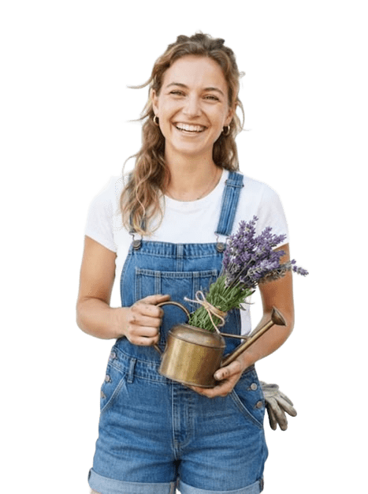
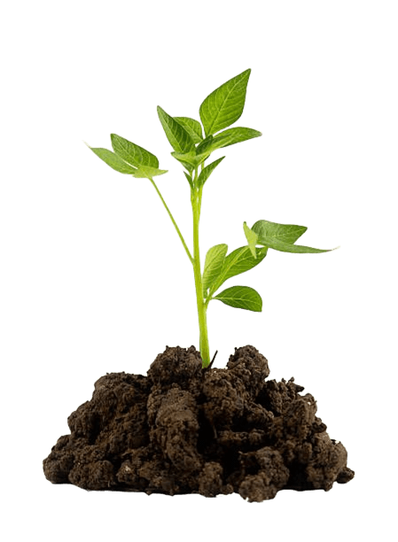
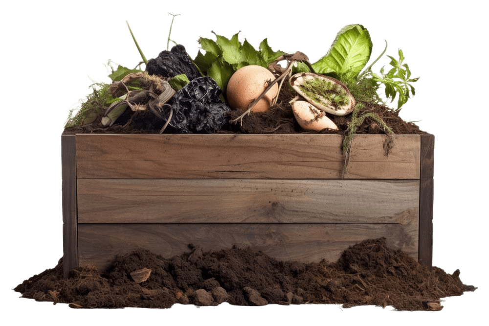
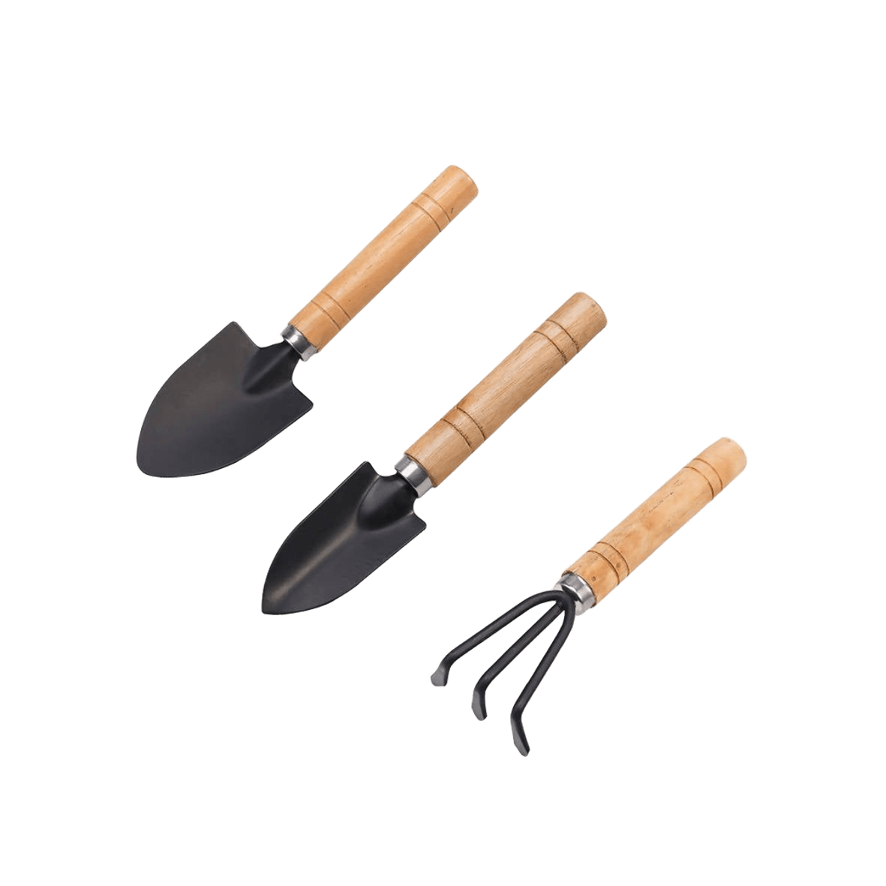
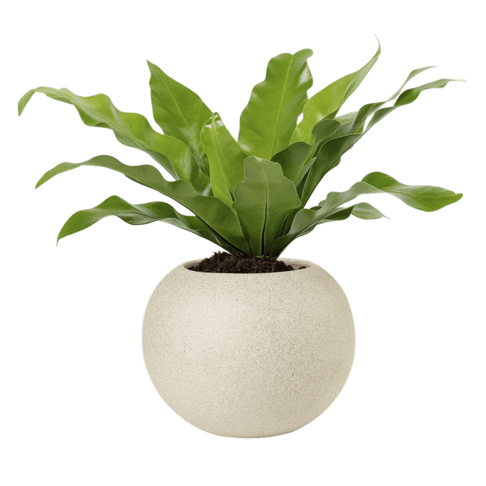

Adubos, sementes, utensílios muito mais...
Ver Produtos
Tudo para cultivar hortas, flores e cuidar do seu jardim.

Variedades de sementes de hortaliças, flores e mudas selecionadas para o seu cultivo.

Terras preparadas, adubos orgânicos e fertilizantes para nutrir e fortalecer as plantas.

Pás, tesouras de poda, ancinhos e regadores práticos para o cuidado diário.

Opções em plástico, barro e fibra para organizar varandas, quintais e áreas internas.